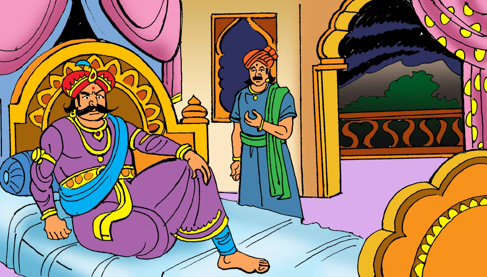

પરાણે ફરીથી કહ્યું, "હે રાજા! ધર્મપુર નામની એક નગરી છે, જેમાં ધર્મશીલ રાજા હતો; અને તેના મંત્રીનું નામ અંધક હતું. તેણે એક દિવસ રાજાને કહ્યું, 'મહારાજ! મંદિર બનાવો, અને દેવીની મૂર્તિ મૂકો. તેમાં, અને તેની સતત આરાધના કરો, કારણ કે આ મહાન યોગ્યતા ધરાવવા માટે શાસ્ત્રમાં કહેવામાં આવ્યું છે.' ત્યારપછી રાજાએ એક મંદિર બાંધ્યું અને તેમાં દેવીની (મૂર્તિ) મૂકી, અને વેદ દ્વારા નિર્ધારિત રીત પ્રમાણે પૂજા કરવાનું શરૂ કર્યું; અને તે પૂજા કર્યા વિના પાણી પીતો નહિ."
આ રીતે ઘણો સમય વીતી ગયો ત્યારે મંત્રીએ એક દિવસ કહ્યું, 'મહારાજ! કહેવત જાણીતી છે કે, પુત્ર વિનાનું ઘર ખાલી હોય છે, મૂર્ખનું મન ખાલી હોય છે, અને ગરીબ માણસને લગતું બધું જ ખાલી હોય છે. ખાલી.' આ શબ્દો સાંભળીને રાજા દેવીના મંદિરમાં ગયો અને હાથ જોડીને પ્રાર્થના કરવા લાગ્યો કે, 'દેવી! બ્રહ્મા, વિષ્ણી, રુદ્ર, ઇન્દ્ર આજીવન તારી બોલીની રાહ જુએ છે; અને તે તમે જ છો. મહિષ-અસુર, ચંડ, મુંડ, રક્તબીજ જેવા રાક્ષસોને પકડીને દુષ્ટાત્માઓનો સંહાર કરીને પૃથ્વીને તેના દર્દમાંથી મુક્તિ અપાવી છે અને જ્યાં જ્યાં તમારા ઉપાસકોને મુશ્કેલી આવી છે, ત્યાં તમે જઈને તેમને મદદ કરી છે; અને આ આશામાં હું તમારી પાસે આવ્યો છું. તારો થ્રેશોલ્ડ; હવે મારા હૃદયની ઈચ્છા પણ પૂરી કર.'
જ્યારે રાજાએ આટલી હદે દેવીની સ્તુતિ કરી ત્યારે દેવીના મંદિરમાંથી અવાજ આવ્યો કે, 'રાજા! હું તમારાથી પ્રસન્ન છું; તમને ગમે તેવું વરદાન માગો.' રાજાએ કહ્યું, 'મા, જો તમે મારા પર પ્રસન્ન હો તો મને પુત્ર આપો.' દેવીએ જવાબ આપ્યો, 'રાજા! તમને એક પુત્ર થશે (જે ખૂબ શક્તિશાળી અને ખૂબ જ ભવ્ય હશે.' પછી રાજાએ ચંદન, અખંડ ચોખા, પુષ્પો, ધૂપ, દીવા અને પવિત્ર અન્નનો પ્રસાદ ચઢાવ્યો અને આરાધના કરી, વધુમાં, તેણે દરરોજ આ રીતે પૂજા કરવાની પ્રથા બનાવી. ટૂંકમાં કહીએ તો, થોડા દિવસો પછી રાજાને પુત્રનો જન્મ થયો. રાજા, તેના પરિવાર અને સંબંધીઓ સાથે, સંગીત અને ગીત સાથે આગળ વધ્યા, અને દેવીના મંદિરમાં પૂજા કરી.
તે દરમિયાન, એક દિવસ એવું બન્યું કે એક ધોબી, તેના મિત્ર સાથે, એક ચોક્કસ નગરમાંથી આ શહેર તરફ આવી રહ્યો હતો, અને દેવીનું મંદિર તેની નજરે પડ્યું. તેણે પોતાને (મંદિર સમક્ષ) પ્રણામ કરવાનો સંકલ્પ કર્યો. તે જ ક્ષણે તેણે એક અવશેરમેનની પુત્રીને જોઈ, જે ખૂબ જ સુંદર હતી, તેની તરફ આવી રહી હતી. તેણીને જોઈને તે મુગ્ધ થઈ ગયો, અને દેવીની પૂજા કરવા ગયો. પ્રણામ કર્યા પછી, તેણે પ્રાર્થનામાં હાથ જોડી, અને મનમાં કહ્યું, 'હે દેવી! જો, તમારી કૃપાથી, આ સુંદર વ્યક્તિ સાથે મારા લગ્ન થાય, તો હું મારું માથું તમને અર્પણ કરીશ.' આ વ્રત કર્યા પછી, અને પ્રણામ કર્યા પછી, તે તેના મિત્રને તેની સાથે લઈ ગયો, અને તેના પોતાના શહેરમાં ગયો.
જ્યારે તે ત્યાં પહોંચ્યો, ત્યારે (તેના પ્રેમથી) છૂટાછેડાએ તેને એટલો પરેશાન કર્યો કે ઊંઘ, ભૂખ, તરસ - બધું જ ભૂલી ગયા. તેણે આખો દિવસ તેના વિચારોમાં વિતાવ્યો. તેની આ કરુણ સ્થિતિ જોઈ તેના મિત્રએ જઈને તેના પિતાને તમામ પરિસ્થિતિ જણાવી. આ વાતો સાંભળીને તેના પિતા પણ ગભરાઈ ગયા અને આ વાત પર વિચાર કરીને કહેવા લાગ્યા, 'તેની સ્થિતિ જોઈને એવું લાગે છે કે (મને) જો તે કન્યા સાથે તેના લગ્ન નહીં થાય, તો તે મૃત્યુને શોક કરશે; તેથી તે છોકરી સાથે તેના લગ્ન કરવા વધુ સારું છે, જેથી તે બચી શકે.'
"આટલું વિચારીને તે પોતાના પુત્રના મિત્રને પોતાની સાથે લઈ ગયો અને તે નગરમાં પહોંચીને તે છોકરીના પિતા પાસે ગયો અને કહ્યું, 'હું તમારી પાસે કંઈક માંગવા આવ્યો છું, જો તમે મારી વિનંતી મંજૂર કરશો, તો હું જાણ કરીશ. ' તેણે જવાબ આપ્યો, 'જો મારી પાસે વસ્તુ હશે, તો હું આપીશ; બોલો.' આ રીતે પોતાનું વચન નિભાવીને, તેણે કહ્યું, 'તમારી પુત્રીને મારા પુત્ર સાથે પરણાવી દો.' આ સાંભળીને તે પણ આ પ્રસ્તાવ માટે સંમત થઈ ગયો; અને એક પૂજારીને બોલાવ્યા, અને જે દિવસે, શુભ સંયોગ અને ક્ષણ નક્કી કરી, તેણે કહ્યું, - તમારા પુત્રને લાવો; હું, મારા ભાગ માટે, મારી પુત્રીના હાથને ડાઘ કરીશ. આ સાંભળીને, તે ઊભો થયો, પોતાના ઘરે પાછો ગયો, લગ્ન માટે જરૂરી બધી તૈયારી કરી, અને વિધિ માટે નીકળ્યો; અને સ્થળ પર પહોંચીને, અને લગ્નની વિધિ પૂરી કરીને, તેણે પોતાનું પુત્ર અને પુત્રવધૂ તેની સાથે ઘરે પાછા ફર્યા; અને કન્યા અને વરરાજાએ સાથે મળીને સુખી જીવનની શરૂઆત કરી."
| પેજ નંબર ૨૦ | ||